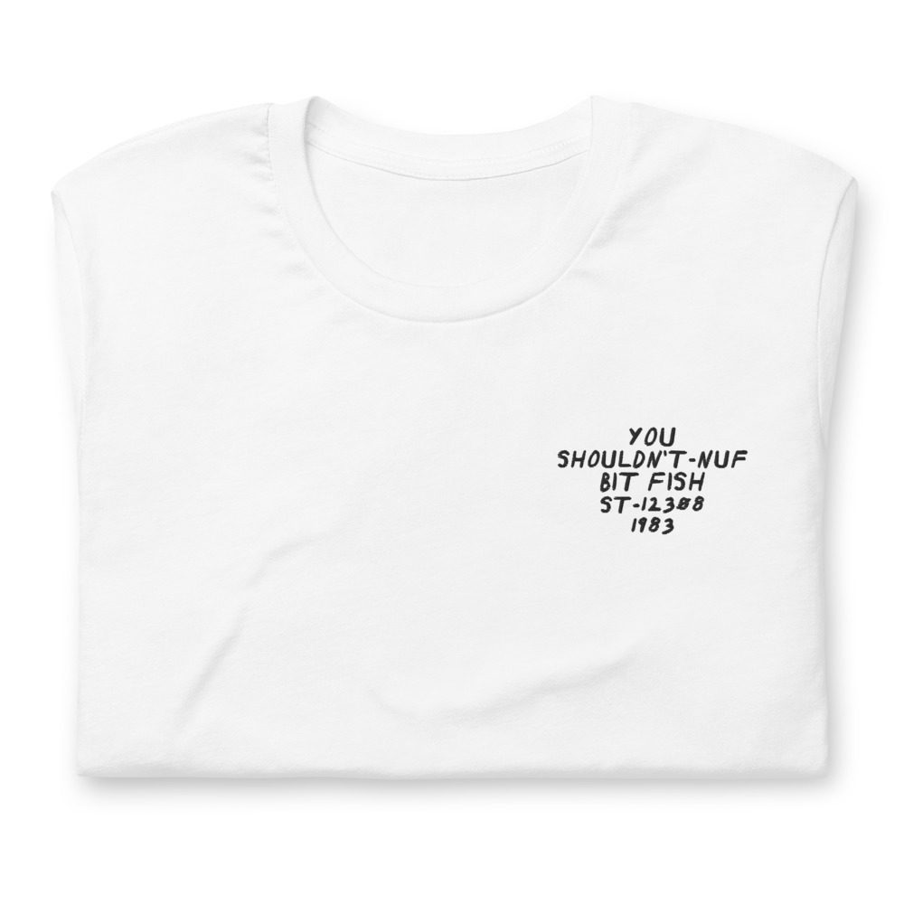
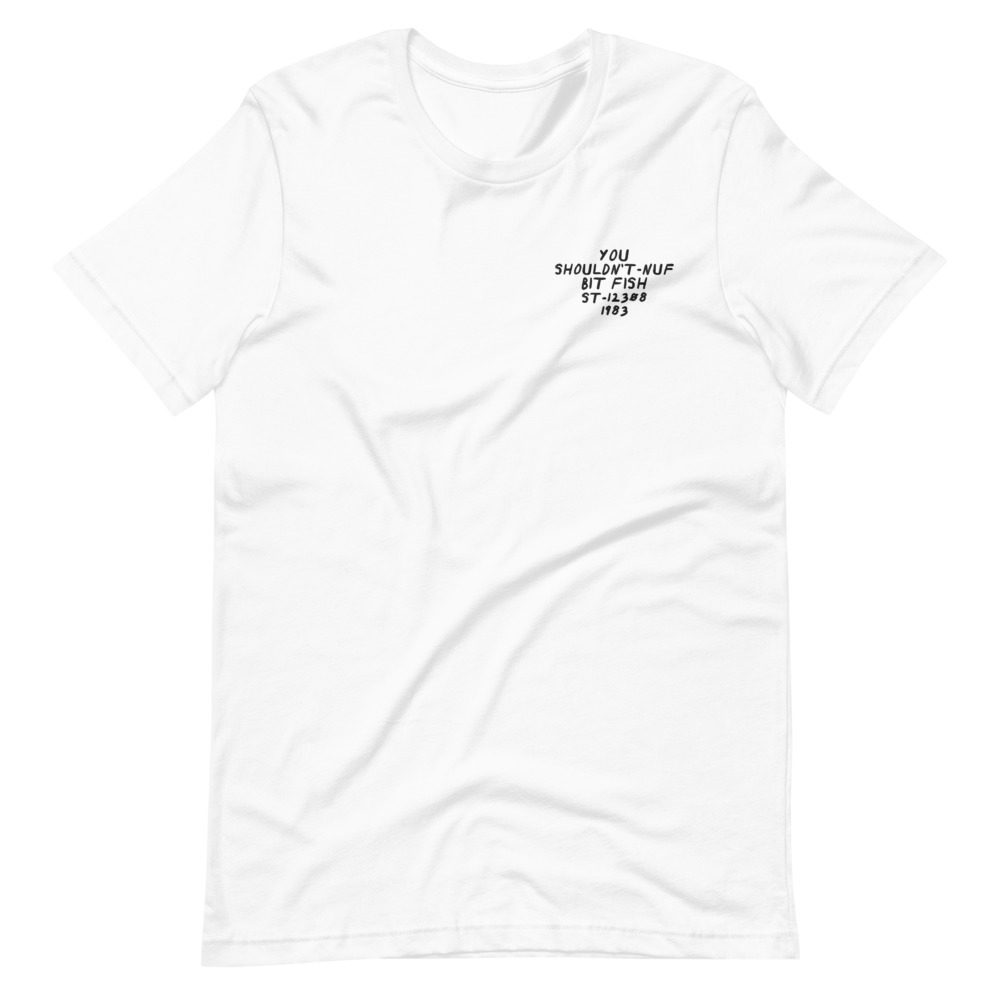

George Clinton – You Shouldn’t-Nuf Bit Fish
Pedro Bell cover.
LP · Capitol ST-12308 · 1983
Ungraded, checked before it ships
Comes with its own shirt: a white tee embroidered on the chest with its title, catalog number and year in my handwriting. Pick a size at checkout. It’s made for you and ships on its own.


Buy $53
Play a track
Side 1
- Nubian Nut5:59
- Quickie6:30
- Last Dance5:11
Side 2
- Silly Millameter5:00
- Stingy6:30
- You Shouldn’t-Nuf Bit Fish8:47
Backing Vocals
Andre Foxxe, Eddie Hazel, Gary Mudbone Cooper, James Gilmore, Jimmy Giles, Kim Seay, Lane Strickland, Mallia Franklin, Rev. Uriah, Robert “P-Nut” Johnson, Ron Ford, Shirley Hayden, Tracey Lewis
Bass
Bootsy Collins, Clip Payne, Lige Curry
Drums
Bootsy Collins
Guitar
Andre Foxxe, Blackbyrd McKnight, Bootsy Collins, Eddie Hazel, Garry Shider, Junie Morrison, Michael Hampton
Keyboards
Bernie Worrell, Blackbyrd McKnight, Clip Payne, David Spradley, Doug Duffey, Junie Morrison, Ron Cron
Percussion
Larry Fratangelo, Muruga Booker
Saxophone
Maceo Parker
Trombone
Fred Wesley
Trumpet
Larry Hatcher, Richard Griffith
Vocals
Clip Payne, Darryl Clinton, Garry Shider, George Clinton, Junie Morrison
Produced by George Clinton